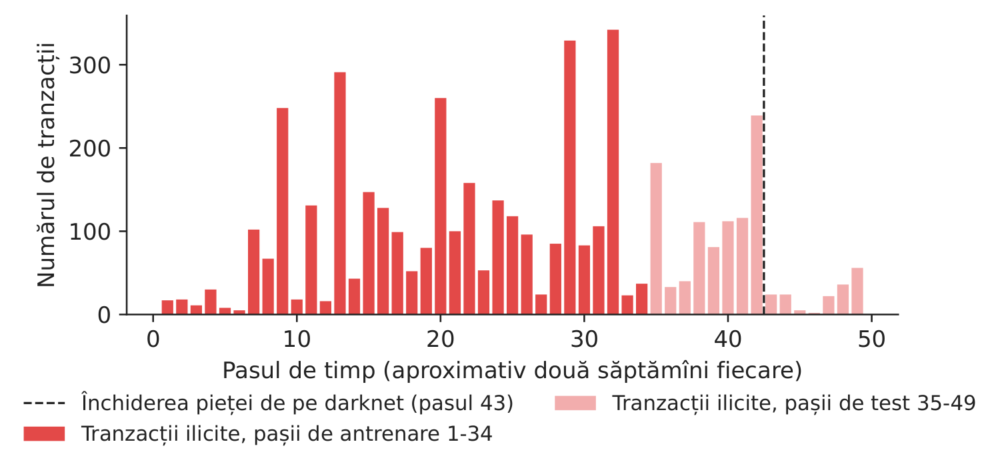
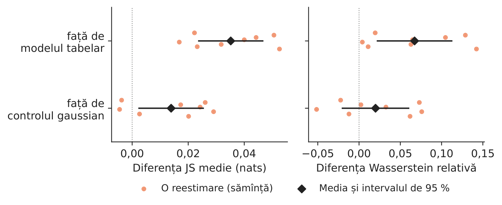
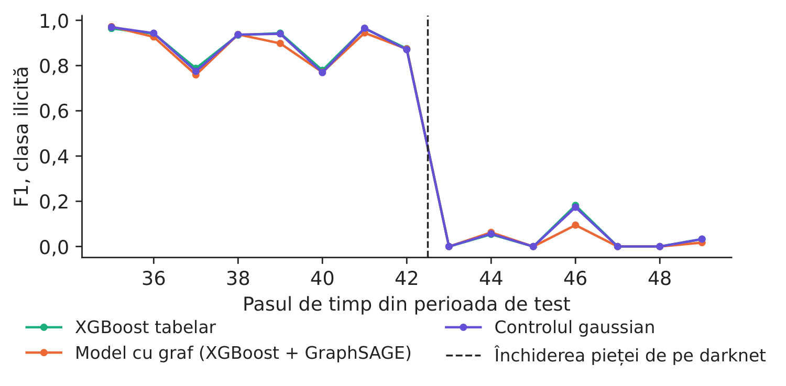
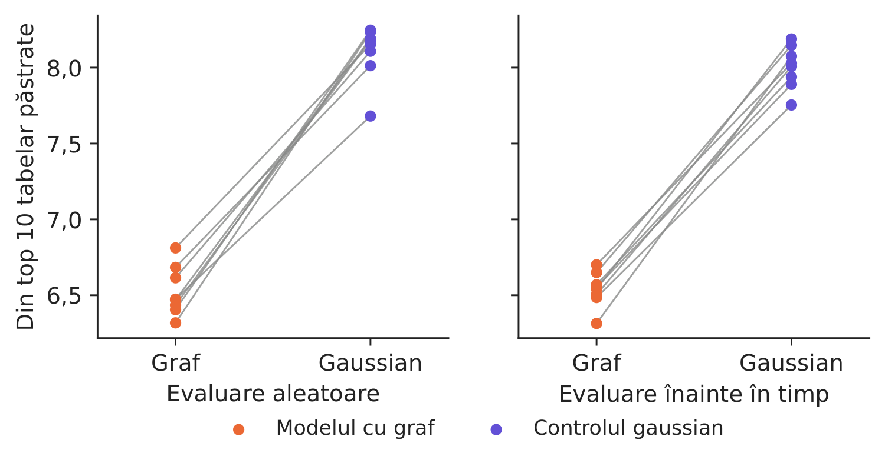

Studiul de caz 3 · Cursul 9
Stabilitatea explicațiilor în modelele pe graf pentru combaterea spălării banilor
Prof. dr. Daniel Traian PELE
Academia de Studii Economice din București, Departamentul de Statistică și Econometrie
Academia Română, Institutul de Prognoză Economică
Lucrarea de referință
Diaconu, D. și Pele, D. T. (2026). SHAP stability across random and forward-time validation in graph-augmented fraud detection. submitted to Expert Systems with Applications. code: github.com/QuantLet/GNN_XAI_Stability
Problema decizională
Departamentul de combatere a spălării banilor (AML, anti-money laundering) al unei platforme de tranzacționare a criptoactivelor verifică tranzacțiile Bitcoin cu un model de arbori de decizie construiți secvențial (gradient boosting). Fiecare alertă ajunge la un analist împreună cu „motivele principale”, adică variabilele cu cele mai mari contribuții SHAP (SHapley Additive exPlanations). Echipa de știința datelor propune adăugarea unor variabile învățate din graful tranzacțiilor de o rețea neuronală pe grafuri (GNN, graph neural network). Directorul de conformitate trebuie să răspundă comitetului pentru riscul de model: dacă adăugăm graful și reantrenăm modelul pe date noi, rămîn aceleași motivele afișate analiștilor? Și cum le monitorizăm după fiecare actualizare, astfel încît o schimbare a explicației să fie observată înainte de a crea confuzie în analiza unui caz?
Lucrarea de referință
Întrebarea de cercetare. Atunci cînd un model de fraudă trece de la validarea aleatoare la validarea înainte în timp, se schimbă mai mult contribuțiile SHAP ale variabilelor originale ale tranzacțiilor dacă modelul folosește și variabile învățate dintr-un graf al plăților, iar diferența se datorează grafului sau numai adăugării de coloane noi (secțiunile 1 și 3.1)?
Datele. Datele de fraudă IEEE-CIS (Institute of Electrical and Electronics Engineers, Computational Intelligence Society): 590.540 de tranzacții cu carduri din aproximativ șase luni, cu o rată a fraudei de 3,50 % și 486 de variabile tabelare; plățile sînt legate prin patru cîmpuri de entitate (adresa, tipul dispozitivului, domeniul de e-mail, identitatea dispozitivului). Împărțirea aleatoare păstrează pentru evaluare 30 % din tranzacții, stratificat după fraudă; împărțirea înainte în timp evaluează plățile de după percentila 70 a timpului; 20 de reestimări (secțiunile 3.2, 4.1–4.3).
Metoda. Același clasificator XGBoost (eXtreme Gradient Boosting) este antrenat pe trei seturi de variabile de intrare: numai cîmpurile tranzacției (modelul tabelar), cîmpurile plus reprezentarea (embedding) cu 64 de dimensiuni din primul strat al unei rețele GraphSAGE (graph sample and aggregate) cu două straturi (modelul cu graf) și cîmpurile plus 64 de coloane gaussiene generate cu covarianța reprezentărilor din eșantionul de antrenare (controlul gaussian). Metoda TreeSHAP intervențională explică aceleași 5.000 de plăți din eșantionul de evaluare; stabilitatea se măsoară prin divergența Jensen–Shannon (JS) și distanța Wasserstein dintre distribuțiile SHAP ale fiecărui cîmp original în cele două scheme de validare, precum și prin suprapunerea cîmpurilor principale pentru aceeași plată (secțiunile 3.3–3.7).
Principalele rezultate ale lucrării.
- Trecerea de la validarea aleatoare la cea înainte în timp a modificat distribuțiile SHAP ale cîmpurilor originale puțin mai mult în modelul cu graf decît în controlul gaussian: diferența JS pereche este +0,00534 nats, cu intervalul de 95 % [+0,00204; +0,00864], în 15 din 20 de reestimări; față de modelul tabelar, diferența a fost \(-\)0,00356, iar intervalul conține valoarea zero (Tabelul 1, secțiunea 5.1).
- Pentru aceeași plată ulterioară, modelul cu graf a păstrat 6,53 din primele zece cîmpuri ale modelului tabelar, iar controlul gaussian 7,33; cîmpul principal s-a schimbat pentru 44,2 % din plăți cu variabilele din graf și pentru 31,1 % cu cele gaussiene (secțiunea 5.2).
- Cele 64 de variabile din graf au preluat 42,0 % din masa totală a valorilor SHAP absolute, iar cele gaussiene 18,8 %; contribuțiile cîmpurilor originale s-au micșorat (raportul median al scalelor este 0,612). Pe scala SHAP brută, modelul cu graf s-a deplasat mai puțin în toate reestimările; raportat la contribuția obișnuită a fiecărui cîmp, s-a deplasat mai mult în 19 din 20 (+0,0451); pe o scală comună s-a deplasat mai puțin (\(-\)0,4833) (secțiunea 5.3, Tabelul 3).
- Pe plățile ulterioare, modelul tabelar a avut un AUC (aria de sub curba ROC, receiver operating characteristic) de 0,9099, modelul cu graf 0,9042, iar controlul gaussian 0,9105; antrenarea grafului pe o perioadă anterioară celei a arborilor a redus diferența (secțiunile 5.4–5.6). Tabelul 7 transformă aceste măsuri într-un ghid de monitorizare pentru echipa de validare; pentru aceste date, autorii ar păstra modelul tabelar (secțiunea 6.1).
Alte lucrări ale grupului nostru: cadrul XAI (explainable artificial intelligence, inteligență artificială explicabilă) pe mai multe niveluri pentru datele IEEE-CIS, care combină SHAP cu eliminarea de noduri și muchii (Diaconu și Pele, 2026, Proceedings of the International Conference on Business Excellence (PICBE) 20(1), 118–132, doi:10.2478/picbe-2026-0015; studiul de caz 1). Datele Elliptic folosite mai jos provin din Weber et al. (2019), arXiv:1908.02591.
Metoda
Intuiția metodei
SHAP împarte scorul unei tranzacții între variabilele de intrare. Dacă adăugăm 64 de coloane noi, ele preiau o parte din merit: cîmpurile vechi primesc contribuții mai mici și, măsurate în unități brute, se deplasează și mai puțin — par „mai stabile” numai pentru că sînt mai mici. Un test corect compară, așadar, modelul cu graf cu un control care adaugă același număr de coloane, cu aceeași covarianță, dar fără informație din graf, și reestimează totul de mai multe ori, deoarece o singură estimare ascunde cît de mult variază explicațiile de la o antrenare la alta.
Reprezentarea din graf. Un strat GraphSAGE actualizează tranzacția \(v\) pe baza propriilor variabile și a mediei variabilelor vecinilor: \(\mathbf z_v=\mathrm{ReLU}\big(\mathbf W_1\mathbf x_v+\mathbf W_2\,\tfrac{1}{|\mathcal N(v)|}\sum_{u\in\mathcal N(v)}\mathbf x_u+\mathbf b\big)\), unde \(\mathbf x_v\) sînt variabilele standardizate, \(\mathcal N(v)\) tranzacțiile legate de \(v\) printr-un flux de plăți, \(\mathbf W_1,\mathbf W_2,\mathbf b\) ponderile învățate, iar ReLU este funcția de activare liniară rectificată (rectified linear unit). Rețeaua este antrenată cu entropia încrucișată ponderată pe clase, numai cu etichetele din eșantionul de antrenare, apoi este înghețată; cele 64 de coordonate \(\mathbf z_v\) din primul strat sînt adăugate la \(\mathbf x_v\). Controlul gaussian. \(\mathbf g_v=\mathbf L\mathbf u_v\), cu \(\mathbf u_v\sim N(\mathbf 0,\mathbf I_{64})\) și \(\mathbf L\mathbf L^\top=\hat{\boldsymbol\Sigma}_z+10^{-6}\mathbf I\), factorul Cholesky al covarianței reprezentărilor din eșantionul de antrenare: aceeași dimensiune și aceeași covarianță, fără nicio informație despre graf. SHAP. Scorul arborilor se descompune în \(f(\mathbf x_i)=\phi_0+\sum_j\phi_{ij}\), unde \(\phi_{ij}\) este valoarea Shapley a variabilei \(j\) pentru tranzacția \(i\) (contribuția marginală medie pe toate ordinile de adăugare a variabilelor), iar \(\phi_0\) este scorul mediu al unui eșantion de referință de 100 de rînduri de antrenare. Stabilitatea între schemele de validare. Pentru modelul \(m\), reestimarea \(s\) și variabila originală \(k\), fie \(P_b,Q_b\) proporțiile valorilor SHAP din validarea aleatoare și din cea înainte în timp aflate în intervalul \(b\) (50 de intervale cuantilice) și \(M_b=(P_b+Q_b)/2\): \(J_{msk}=\tfrac12\sum_b P_b\log\frac{P_b}{M_b}+\tfrac12\sum_b Q_b\log\frac{Q_b}{M_b}\) (în nats), iar diferența pereche \(\Delta_s(C)=\tfrac1p\sum_{k=1}^{p}(J_{Gsk}-J_{Csk})\) compară modelul cu graf \(G\) cu un model de comparație \(C\), pe cele \(p\) variabile comune. Distanța Wasserstein împerechează valorile ordonate, \(W_{mk}=\tfrac1n\sum_{i}|\phi^{R}_{mk(i)}-\phi^{T}_{mk(i)}|\), și se citește pe trei scale: brută, raportată la contribuția absolută medie a variabilei în propriul model, \(a_{mk}\) (\(W_{mk}/a_{mk}\)), și raportată la o scală comună \(c_k=(a_{Gk}+a_{Bk})/2\). Aceeași tranzacție. \(O(m,B)=\tfrac1n\sum_i|T_{mi}\cap T_{Bi}|/10\), unde \(T_{mi}\) sînt cele zece variabile cu cele mai mari valori \(|\phi_{ij}|\) pentru tranzacția \(i\) în modelul \(m\), iar \(B\) este modelul tabelar. Fiecare diferență pereche este mediată pe cele \(S\) reestimări, cu intervalul \(\bar\Delta\pm t_{0.975,S-1}\,s_\Delta/\sqrt S\).
În practică
Comparați explicațiile unui model nou cu un control care are același număr de coloane adăugate; raportați stabilitatea pe scala pe care o citesc utilizatorii (unități brute ale scorului pentru monitorizarea scorurilor, unități relative pentru variabilele cu contribuții mici, motivele afișate pentru analiști) și reestimați întotdeauna de mai multe ori înainte de a considera reală o diferență.
Replicarea pe datele cursului
Notebook-ul C3_notebook_RO.ipynb folosește graful tranzacțiilor Bitcoin Elliptic (Weber et al., 2019): 203.769 de tranzacții, 234.355 de fluxuri de plăți, 49 de pași de timp de aproximativ două săptămîni și 165 de variabile; 46.564 de tranzacții sînt etichetate (4.545 ilicite, 42.019 licite).
Împărțirea înainte în timp: antrenare pe pașii 1–34 (29.894 de tranzacții etichetate, 11,6 % ilicite), test pe pașii 35–49 (16.670, 6,5 % ilicite); împărțirea aleatoare păstrează pentru evaluare același număr de tranzacții, stratificat după clasă.
În fiecare dintre cele 8 reestimări, sămînța aleatoare schimbă împărțirea aleatoare, inițializarea GraphSAGE și valorile gaussiene; SHAP explică 1.000 de tranzacții din eșantionul de evaluare pentru fiecare schemă (aceleași 1.000 de tranzacții ulterioare în toate estimările înainte în timp).
Implementarea de la curs: Elliptic în loc de IEEE-CIS, un graf între tranzacții în locul plăților legate prin entități, 400 de arbori de adîncime 6 în loc de 1.000 de adîncime 10, 8 reestimări în loc de 20.

Figura 1. Tranzacțiile ilicite pe pași de timp; perioada de test începe la pasul 35.
Sursa: setul de date Elliptic (Weber et al., 2019).

Figura 2. Diferențe pereche, modelul cu graf minus modelul de comparație; un punct pentru fiecare reestimare.
Sursa: calcule proprii; 8 reestimări.
Tabelul 1. Cît se deplasează distribuțiile SHAP ale celor 165 de variabile originale între validarea aleatoare și cea înainte în timp? Modelul cu graf minus modelul de comparație.
| Diferența pereche (media reestimărilor) | Noi | Interval 95 % | Rulări pozitive | Lucrarea (IEEE-CIS) |
|---|---|---|---|---|
| Divergența JS, graf – control gaussian | +0,0139 | [+0,0025; +0,0254] | 6/8 | +0,00534 |
| Divergența JS, graf – tabelar | +0,0352 | [+0,0238; +0,0466] | 8/8 | \(-\)0,00356 |
| Wasserstein, unități SHAP, graf – tabelar | \(-\)0,0129 | [\(-\)0,0154; \(-\)0,0104] | 0/8 | \(-\)0,00215 |
| Wasserstein, scala proprie, graf – tabelar | +0,067 | [+0,022; +0,112] | 8/8 | +0,0451 |
| Wasserstein, scala proprie, graf – gaussian | +0,020 | [\(-\)0,020; +0,060] | 5/8 | +0,0374 |
| Wasserstein, scală comună, graf – tabelar | \(-\)0,450 | [\(-\)0,513; \(-\)0,387] | 0/8 | \(-\)0,4833 |
Sursa: calcule proprii pe Elliptic (8 reestimări; pozitiv = modelul cu graf se deplasează mai mult); lucrarea: IEEE-CIS, 20 de reestimări (Tabelele 1 și 3).
Ce arată datele. Pe Elliptic, tiparul din lucrare reapare, mai pronunțat. Trecerea de la validarea aleatoare la cea înainte în timp modifică distribuțiile SHAP ale variabilelor originale mai mult în modelul cu graf decît în controlul gaussian (diferența JS pereche este 0,0139 nats, cu intervalul de 95 % [0,0025; 0,0254], pozitivă în 6 din cele 8 reestimări) și, aici, mai mult și decît în modelul tabelar (0,0352 nats). Masa SHAP explică de ce: cele 64 de coordonate din graf preiau 55,8 % din totalul valorilor SHAP absolute, iar cele 64 de coordonate gaussiene numai 10,1 %; suma contribuțiilor absolute ale variabilelor originale pentru o tranzacție scade de la 10,00 în modelul tabelar la 5,90 cu graful (9,62 cu controlul gaussian), ceea ce corespunde unui raport median al scalelor de 0,517. Deoarece variabilele originale se micșorează, modelul cu graf se deplasează mai puțin pe scala SHAP brută (\(-\)0,0129, pozitivă în 0 din cele 8 reestimări) și pe scala comună (\(-\)0,450), dar mai mult atunci cînd deplasarea fiecărei variabile este raportată la contribuția sa obișnuită (0,067, pozitivă în 8 din 8) — inversarea descrisă în secțiunea 5.3 a lucrării. Care model este „mai stabil” depinde de scală, așa cum arată lucrarea.

Figura 3. Cîte dintre primele zece variabile ale modelului tabelar rămîn în primele zece pentru aceeași tranzacție?
Sursa: calcule proprii; liniile unesc cele două modele din aceeași reestimare.

Figura 4. F1 pentru clasa ilicită, pe pași de timp din perioada de test (media reestimărilor).
Sursa: calcule proprii; alertă dacă probabilitatea de tranzacție ilicită depășește 0,5.
Tabelul 2. Calitatea detectării în perioada de test, înainte și după închiderea pieței de pe darknet (media celor 8 reestimări; clasa ilicită, prag 0,5).
| Model, perioada de test | AUC | PR-AUC | Precizie | Sensibilitate | F1 |
|---|---|---|---|---|---|
| XGBoost tabelar, pașii 35–42 | 0,974 | 0,921 | 0,967 | 0,856 | 0,908 |
| XGBoost tabelar, pașii 43–49 | 0,715 | 0,046 | 0,083 | 0,018 | 0,029 |
| Model cu graf (XGBoost + GraphSAGE), pașii 35–42 | 0,970 | 0,916 | 0,982 | 0,832 | 0,901 |
| Model cu graf (XGBoost + GraphSAGE), pașii 43–49 | 0,665 | 0,039 | 0,114 | 0,011 | 0,020 |
| Controlul gaussian, pașii 35–42 | 0,973 | 0,920 | 0,966 | 0,854 | 0,906 |
| Controlul gaussian, pașii 43–49 | 0,700 | 0,043 | 0,088 | 0,018 | 0,030 |
Sursa: calcule proprii. PR-AUC = aria de sub curba precizie–sensibilitate.
O tranzacție pe rînd. Pentru aceleași tranzacții ulterioare, modelul cu graf păstrează 6,54 din primele zece variabile ale modelului tabelar (controlul gaussian: 8,00; lucrarea: 6,53 și 7,33) și 1,84 din primele trei (2,45). Detectarea nu se îmbunătățește: pe pașii 35–49, diferența de AUC dintre modelul cu graf și cel tabelar este \(-\)0,0137 (intervalul de 95 % [\(-\)0,0176; \(-\)0,0098]). Înainte de închiderea pieței de pe darknet, toate cele trei modele găsesc majoritatea tranzacțiilor ilicite (modelul tabelar: sensibilitate 0,856, F1 0,908); de la pasul 43, sensibilitatea scade la 0,018 (modelul cu graf: 0,011). Explicațiile pot fi calculate în continuare, dar descriu un tipar care nu mai găsește tranzacțiile ilicite — monitorizarea explicațiilor nu înlocuiește monitorizarea performanței. Cifra relevantă pentru decizie. Cu modelul cu graf, motivul principal afișat analistului se schimbă pentru 53,7 % din tranzacțiile ulterioare, față de 20,1 % pentru un model cu același număr de coloane fără informație (lucrarea: 44,2 % și 31,1 %): o diferență de 33,6 puncte procentuale. Acestea sînt cazurile pe care echipa de validare ar trebui să le eșantioneze și să le reanalizeze înainte de schimbarea modelului (Tabelul 7 din lucrare).
Întrebări pentru discuție
- Echipa de știința datelor arată că valorile SHAP brute ale cîmpurilor vechi se deplasează mai puțin după adăugarea grafului. Ce întrebare puneți înainte de a accepta că noul model este „mai stabil”?
- Un analist vede un alt motiv principal pentru aceeași alertă după actualizarea modelului. Cine trebuie informat și ce trebuie consemnat în dosarul cazului?
- Care dintre măsurile din acest studiu de caz (divergența JS, distanța Wasserstein pe trei scale, suprapunerea primelor zece variabile, schimbarea variabilei principale) le-ați include în raportul lunar privind riscul de model și cu ce prag de alarmă?
- După pasul 43, tranzacțiile ilicite își schimbă tiparul, iar sensibilitatea scade puternic pentru toate modelele. Mai este utilă o explicație atunci cînd modelul nu mai detectează frauda pe care o explică?
- Modelul cu graf trebuie să își „cîștige locul” (secțiunea 6.1 a lucrării). Ce dovezi — o detectare mai bună pe date ulterioare sau analize de caz mai bune — ați cere înainte de a înlocui un model care funcționează?
Limitele replicării
(i) Elliptic este o rețea diferită de IEEE-CIS: tranzacțiile sînt legate direct prin fluxuri de plăți, iar cele 165 de variabile sînt anonimizate și includ deja agregări pe vecinătăți, astfel încît o parte din informația din graf se află și în modelul tabelar. (ii) Folosim 8 reestimări, 400 de arbori de adîncime 6 și 1.000 de tranzacții explicate pentru fiecare schemă, mai puțin decît în lucrare, de aceea intervalele noastre sînt mai largi. (iii) În împărțirea aleatoare, mesajele GraphSAGE folosesc variabilele (nu etichetele) tranzacțiilor din eșantionul de evaluare; graful pentru validarea înainte în timp este construit numai din pașii 1–34. (iv) Comparația descrie un singur prag (pasul 34) și un singur set de date; închiderea pieței de pe darknet după pasul 43 este o schimbare puternică, specifică acestei perioade.
Studiul de caz 3 pe scurt
- ÎntrebareDacă adăugăm variabile din graf și reantrenăm, rămîn aceleași motivele afișate analiștilor?
- DateGraful Bitcoin Elliptic: 46.564 de tranzacții etichetate, 49 de pași de timp; antrenare 1–34, test 35–49.
- MetodăXGBoost pe variabile, + reprezentare GraphSAGE, + control gaussian; SHAP; JS, Wasserstein, primele \(k\); 8 reestimări.
- RezultatBlocul din graf preia 55,8 % din SHAP; motivul principal se schimbă în 53,7 % din cazuri (control 20,1 %); stabilitatea depinde de scală.
- DecizieMonitorizați față de un control echivalent, pe scala citită de utilizatori; cereți o detectare mai bună înainte de a înlocui un model care funcționează.

Sursa: reestimările noastre XGBoost pe datele Elliptic; variabilele din primele zece ale modelului tabelar păstrate pentru aceleași tranzacții.
Abrevieri
| AML | combaterea spălării banilor |
|---|---|
| AUC | aria de sub curba ROC, ROC = receiver operating characteristic |
| GNN | rețea neuronală pe grafuri |
| GraphSAGE | eșantionare și agregare pe graf |
| IEEE-CIS | Institute of Electrical and Electronics Engineers, Computational Intelligence Society |
| JS | Jensen–Shannon |
| PICBE | Proceedings of the International Conference on Business Excellence |
| PR-AUC | aria de sub curba precizie–sensibilitate |
| ReLU | unitate liniară rectificată |
| ROC | receiver operating characteristic |
| SHAP | SHapley Additive exPlanations |
| TreeSHAP | SHAP pentru ansambluri de arbori |
| XAI | inteligență artificială explicabilă |
Textul, cifrele, graficele și tabelele acestei pagini sînt cele ale studiului de caz; toate cifrele sînt calculate de notebook-ul studiului pe datele cursului.